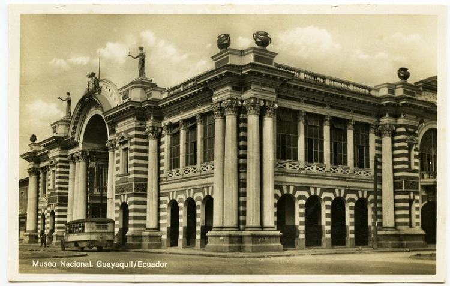
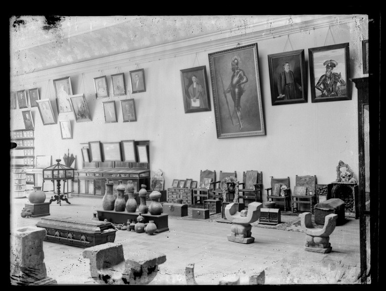

Historia del Museo Municipal de Guayaquil
El Museo Municipal de Guayaquil es una institución cultural
dedicada a conservar y compartir la historia y el patrimonio
de la ciudad. Sus antecedentes se remontan a 1863, cuando se
impulsó la creación de un museo y una biblioteca municipal
para reunir objetos de interés histórico y promover el
conocimiento. Con el paso de los años, sus colecciones
crecieron e incorporaron piezas arqueológicas, documentos,
obras de arte y objetos relacionados con las distintas etapas
de la vida guayaquileña. En 1908, el museo funcionó en el
edificio del antiguo Cabildo y, posteriormente, se estableció
en su actual sede, inaugurada en 1958. Desde entonces, se ha
convertido en un espacio importante para conocer los
acontecimientos, las costumbres y las expresiones artísticas
que han formado la identidad de Guayaquil. A través de sus
exposiciones y actividades educativas, el museo permite que
estudiantes, investigadores y visitantes se acerquen al
pasado de la ciudad y comprendan la importancia de preservar
su patrimonio para las futuras generaciones.

